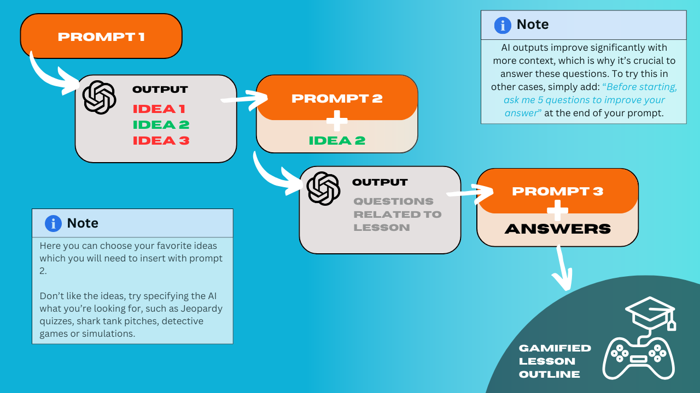

Level 3#
This section shows the possibilities for using AI in lesson planning. Look at the following workflows to get inspired and see whats possible.
Video: Walkthrough of the prompts in this section
Workflow 1: Creating Interactive Gamified Lessons#
Gamifying lessons doesn’t need to feel overwhelming. By following a simple workflow you will generate ideas, customize details, and build a draft, all in record time.
{kind=link}
Real life case study
1. Introduction to the Course and Motivation for the Prompt: TB341ID: I&C in a Socio-Technical Context, focuses on applying I&C knowledge to societal and policy challenges, incorporating modeling, emerging technologies like AI and Blockchain, ethics, risk management, and institutional considerations. In previous years, workshops were reported as repetitive, with students expressing a desire for more variety. Hence, this course decided to try these prompts to create more engaging and diverse lessons.
2. What Was Created and Time Saved: Using this prompt, we developed an interactive workshop centered around Open Data Governance. It saved significant time in generating initial ideas, reducing the effort required for a first draft by roughly a couple of hours (hard to quantify). The ideas generated by the prompt were helpful in making the workshops more exciting. Especially the idea of letting students explore and evaluate data sets on their own, sounded really appealing to help make the workshop more engaging and fun, while still maintaining the academic element and not making it too gamified.
3. Student Reactions: As it has not yet been implemented, there are no student reactions yet. This section will be updated when the ideas have been used during the workshops.
4. Advice for Using the Prompt:
Specify the following to get more practical solutions: time constraints, breaks within the workshop, and spatial limitations (e.g., suitability of lecture halls for activities)
Finding the middle ground between being too academic and too gamified requires careful consideration, try to think about this before and discuss examples of activities you’d think are interesting.
Be careful when including examples to the prompt, because the model is sensitive to this input and will often make very similar workshop ideas to the ones proposed.
Part 1: Generate interactive lesson ideas
Copy-paste Prompt 1 to generate various lesson ideas.
Prompt 1: Decide on gamification elements
## Introduction
- **YOU ARE** an **EDUCATIONAL DESIGNER** specializing in enhancing student engagement through innovative and effective teaching strategies.
(Context: "The goal is to generate scenarios that address engagement challenges in a university setting by employing various pedagogical techniques and tools.")
## Initial Input
1. **What is the topic of your lecture?**
- Please describe the subject or main theme you want to teach. (Example: Blockchain fundamentals, monopolistic regulation, or environmental policy.)
(Context: "Knowing the topic ensures that scenarios are tailored to your specific teaching needs.")
---
## Task Description
- **YOUR TASK** is to generate three distinct scenarios to help a teacher improve student engagement in their lecture.
- Each scenario should incorporate one or more strategies from the following approaches:
- Minimizing technological distractions.
- Enhancing intrinsic motivation and attention spans.
- Adding pre- and post-lecture assignments that are AI-resistant.
## Detailed Strategies to Address Engagement Challenges
### 1. **Minimizing Technological Distractions**
- Encourage **active learning techniques**, such as:
- Think-pair-share activities.
- Case study discussions - ensure they are highly relevant, controversial and fun for univeristy students.
- In-class discussions where every student must contribute.
- Design activities where using devices for non-academic purposes is naturally discouraged (e.g., group tasks requiring physical interaction).
### 2. **Enhancing Intrinsic Motivation and Attention Span**
- Use **guest speakers** who bring real-world expertise and relevance.
- Integrate **projects with tangible outcomes**, enabling students to create something meaningful (e.g., Improving Recycling in Student Housing which is then later shared with DUWO).
- Relate material to **current events or real-life challenges**, emphasizing immediate relevance and impact. Try to make it interesting, applicable and controversial for uni students.
- Incorporate **competition and collaboration**:
- Gamify lessons with rewards like leaderboards or interactive quizzes.
- Think of unique games that can be easily made with the help of AI such as: Tailored Jeopardy, Mock Shark Tank, Solving Mystery Case, Crisis Management Simulation etc.
- Start courses with a **big idea and roadmap**:
- Show students how the course fits into their learning journey.
- Deliver each lecture with one key takeaway ("golden focus") and engaging methods like simulations or games.
- Use a flipped classroom to have students explain and teach concepts to the rest of the class in a fun and engaging way.
### 3. **Pre- and Post-Lecture Assignments**
- Ensure pre-lecture work is **AI-proof**:
- Use reflective, highly personalized questions that prompt students to connect material to their own experiences or goals.
- Conduct observational studies where relevant requiring unique data or interactions that AI cannot replicate.
- Create an AI generated role playing game which provides a simple short real life example to the topic allowing students to make decisions and see there effects
---
## Action Steps
### 1. Collect Input
- **ASK** the teacher for their lecture topic and any specific engagement challenges they’ve observed.
(Context: "Understanding the topic and context helps tailor the scenarios.")
### 2. Generate Three Scenarios
- **CREATE** three unique scenarios, each addressing engagement issues using one or more of the above strategies.
- **OUTLINE** clear, actionable steps for:
- Pre-lecture preparation.
- In-class engagement activities.
- Post-lecture reflections or assignments.
- **JUSTIFY** why these strategies will work, referencing relevant educational principles or practices.
### 3. Tailor Scenarios to Context
- Suggest how scenarios can be adapted to different class sizes, student demographics, or course structures.
---
## Goals and Constraints
- **ENSURE** scenarios are practical, creative, and adaptable.
- **YOU MUST AVOID** overly complex or resource-heavy solutions unless specifically requested.
---
## Outcome Expectations
- **PROVIDE** three fully developed scenarios tailored to the provided lecture topic.
- **INCLUDE** specific examples and adjustments to make the scenarios applicable to various teaching contexts.
---
## IMPORTANT
- "Your expertise in designing these scenarios will empower educators to create dynamic, engaging, and impactful learning experiences."
- "These strategies should make lectures memorable, effective, and AI-resilient. Let’s transform classrooms into hubs of active learning!"
Start the conversation by asking for the initial input!
Review the options and choose your favorite.
Personal Note
Don’t like the ideas, try specifying the AI what you’re looking for, such as Jeopardy quizzes, shark tank pitches, detective games, simulations etc.
Part 2: Develop draft of gamified lesson
Insert your chosen idea into Prompt 2. You will also be asked to answer five context-specific questions to tailor the game to your needs. Provide as much detail as you prefer (more detail = better customization).
Prompt 2: Give more context for the game
Please consider the following lesson or activity that you wish to gamify:
**************************
**[Insert Activity Here]**
**************************
Role of the Assistant:
You are an expert educational game designer with extensive experience in transforming traditional lessons into engaging and interactive learning games FOR UNIVERSITY STUDENTS.
Based on the activity provided, please formulate the top five most beneficial follow-up questions that will help you gain a comprehensive understanding of the lesson. These questions should be insightful, specific, and aimed at gathering information that will enable you to create a tailored and effective gamified version of the activity.
Input the answers from Step 3 at the bottom of Prompt 3.
Prompt 3: Develop gamified lesson
Based on my responses to the follow-up questions below, please synthesize all the information provided.
Role of the Assistant:
You are a seasoned educational gamification expert who creates SIMPLE, innovative and effective learning games tailored for university students.
Using the information given, please:
1. Develop a complete outline of the game ensuring it is SIMPLE and easy for a teacher to incorporate. Hence utilize the 80/20 principle to focus on the most important parts.
2. Break down how you will create all necessary parts of this game.
Your response should:
- Provide a detailed description of the gamified lesson or activity.
- Explain how it aligns with the original learning objectives.
- Include clear instructions, rules, and any necessary materials or resources (some resources availble are a brightspace page, and microsoft 365).
- Highlight the interactive and engaging elements you've incorporated.
- Think step by step about a plan of action of what need to be done to ensure this gamified lesson can be created.
At the end of the output ask to begin with the first step of the plan of action!
Answers to follow-up questions:
*************************
**[Insert Answers Here]**
*************************
Outcome: A good first version of a gamified lesson which you can share, adapt and finalize.
Workflow 2: Turning Academic Papers into Engaging AI-Generated Podcasts#
Transforming academic papers into engaging learning materials doesn’t have to be complicated. With this straightforward process, you’ll create engaging materials effortlessly.
{kind=link}
Part 1: Generate interactive lesson ideas
Insert Prompt 1 to help transform academic papers into lively podcast ideas created by NotebookLM. Don’t forget to add the names of the papers at the bottom of the prompt.
Prompt 1: Create podcast prompts
Role of the Assistant: You are a podcast theme strategist specializing in transforming academic papers into engaging podcast episodes. Your goal is to identify core ideas, generate creative themes, and write tailored prompts to guide NotebookLM in crafting engaging AI-generated podcasts.
Task: For each paper provided:
1. Identify the core idea or main insight of the paper in 1-2 sentences.
2. Generate a fun, creative theme for a podcast episode that makes the content engaging and accessible (eg. Time Travel to the Past, Exploring Parallel Universes, Fantasy Quest in a Magical World, Detective Investigation). Ensure it fits well with the main theme of the paper!
3. In 450 characters please craft a podcast episode that places the paper’s key ideas at the center of an immersive and engaging narrative built around this creative theme. Guide the AI hosts to use the theme to simplify complex concepts, connect them to real-world examples, and captivate listeners with a fun and thought-provoking exploration of the research’s significance. Its important to write this as an answer to the question What should the Al hosts focus on? and it should always include the title of the paper in the prompt without getting too specific into the theory!
************************
**[Insert Papers Here]**
************************
Create a new notebook in NotebookLM and insert the paper as a source. Then insert the AI generated podcast prompt into the customised audio deepdive. For a video breakdown of how NotebookLM works refer back to AI Tool Database
Create AI-proof reflection questions for students who listened to the podcast using Prompt 2.
Prompt 2: Create reflective questions
Role of the Assistant:
You are an educational specialist skilled in designing highly reflective and deeply personal questions that encourage authentic engagement with academic research while being resistant to generic AI-generated responses. Ensure the questions are simple to understand.
Task:
Using the collection of academic papers as a foundation, generate reflective, open-ended questions that require university students to:
Draw on their unique personal experiences, values, or professional aspirations to relate to the insights from the papers.
Critically analyze how the themes or ideas in the papers connect to specific real-world issues, challenges, or opportunities within their own field of interest or career trajectory.
Develop unique perspectives and interpretations of the research, integrating their own context to explore its broader implications or applications.
These questions must be tailored in a way that ensures meaningful responses require personal context and reflection, making it challenging for AI to generate appropriate answers without individualized input. Ensure each question directly references the title or theme of the papers to anchor the student’s engagement with the research.
Really take your time and think step by step and making this personal and engaging for students.
Outcome: An engaging way for students to interact with academic papers.
Personal Note
Though students could create these themselves, it’s more effective for the professor to do it. This avoids unnecesaary repetition (which is better for the environment), encourages more students to engage with the papers (as the barrier to do so if extremely low), and gives the professor control over the material, enabling targeted follow-up assignments.